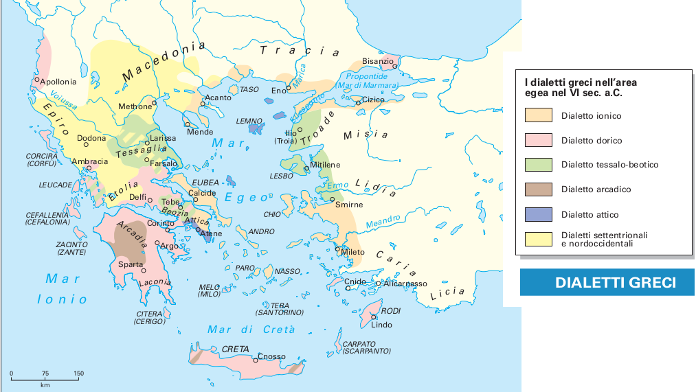

La lingua greca
Il greco, molto piuÁ complesso nella sua struttura rispetto al latino, appartiene alla famiglia delle lingue indoeuropee, della quale fanno parte, fra gli altri, i seguenti idiomi:
l'indo-iranico (sanscrito o antico indiano; avestico o antico persiano) l'armeno il germanico il latino l'osco-umbro il balto-slavo il celtico l'albanese l'illirico il macedone l'ittita
Le lingue indoeuropee possiedono caratteristiche comuni sia nelle radici nominali e verbali, sia nelle strutture della declinazione, della coniugazione e della sintassi del periodo. Le varie tribù degli Indoeuropei, intorno al III millennio a.C., erano stanziate in un'ampia zona, i cui confini andavano dal Caucaso al Mare del Nord, dagli Urali alla zona centrale della Germania. Attraverso varie migrazioni, esse si spostarono verso l'Asia e l'Europa, venendo in contatto con le popolazioni indigene e assimilando gradualmente anche elementi delle lingue preesistenti. Gli Indoeuropei, intorno alla metà del III millennio a.C., giunsero anche nella parte meridionale della penisola balcanica, dove abitava una popolazione diversa dalla loro, che parlava una lingua affine ad altre lingue preindoeuropee del bacino del Mediterraneo. Essi, che non conoscevano la scrittura, cominciarono ad usare l'alfabeto locale per scrivere la loro lingua, nella quale furono trasferiti vari elementi dell'idioma del luogo. L'origine del greco antico risale, quindi, all'indoeuropeo originario, che è lo stadio iniziale comune delle lingue indoeuropee; il suo patrimonio lessicale, pertanto, e le forme di flessione sono, per la maggior parte, l'ereditaÁ di un'epoca antecedente alla sua esistenza come lingua a sé stante.
La lingua greca costituisce un caso eccezionale nell’ambito delle lingue indoeuropee, perché le testimonianze scritte ci permettono di seguirne l’evoluzione lungo un arco di tempo amplissimo: 34 secoli. Possiamo individuare le seguenti fasi:
fase micenea (fine secondo millennio a.C.)
fase arcaica e classica (dall’VIII sec. a.C. al IV sec. a.C.)
fase ellenistica e romana (dal IV sec. a.C. al IV sec. d.C.)
fase bizantina (dal V sec. d.C. al XV sec. d.C.)
fase del “neo greco”, la lingua nazionale della Grecia moderna
Dialetti epicorici3 e dialetti letterari
Le prime testimonianze scritte del greco (di un dialetto greco, il miceneo) risalgono alla fine del XIII secolo a.C. Esse sono rappresentate in larga parte da circa 4700 tavolette di terracotta conservate negli archivi dei palazzi di Cnosso a Creta, di Micene e Tirinto in Argolide, di Pilo in Messenia e di Tebe in Beozia. La loro conservazione può apparire quasi uno scherzo del destino: infatti gli incendi che distrussero i palazzi e causarono la fine della civiltà micenea fecero cuocere – e quindi indurire e sopravvivere – le fragili tavolette di argilla cruda seccata al sole. Su di esse sono registrate le entrate, fissate le tasse, inventariati i prodotti immagazzinati nell’ultimo periodo di vita dei palazzi. Il miceneo, utilizzato per rispondere alle esigenze pratiche della burocrazia e dell’amministrazione palaziale, è quindi limitato dal punto di vista qualitativo. Il sistema di scrittura è definito “lineare B”: si tratta di una scrittura sillabica che fu decifrata nel 1952 dagli inglesi Micheal Ventris e John Chadwick. La Lineare B comprende una novantina di segni e si sviluppa dalla Lineare A, scrittura anch’essa sillabica usata dai Minoici a Creta. La lingua della Lineare B, a differenza della Lineare A cretese, è già greco, come dimostra la presenza di termini che compariranno successivamente in greco come pa-te («padre» > greco πατήρ), wa-na-ka («signore, sovrano» > greco ἄναξ, e ancora da-mo («popolo» > greco δῆμος"), i-je-re-ja («sacerdotessa» > greco ἱέρεια) ecc. A differenza del greco di età successiva, però, è una lingua caratterizzata da sole sillabe aperte, mentre il greco, in quanto lingua fusiva, è ricco di nessi consonantici e di sillabe chiuse. L’uso della scrittura presso i micenei, allo stato attuale degli studi, pare esclusivamente limitato alle attività economiche e amministrative. Le attestazioni greche successive sono posteriori alla metà dell’VIII secolo a.C. Tutta la documentazione relativa al I millennio testimonia un quadro di molteplici parlate locali. Gli studiosi hanno individuato la ragione di tale frammentazione linguistica nella conformazione fisica della Grecia, in cui montagne, colline e piccole pianure, isolate l’una dall’altra, rendevano difficili i contatti, e nel particolarismo politico dei Greci, gelosi dell’autonomia e indipendenza locali.
D’altro canto i Greci, pur nella differenziazione dialettale4, si comprendevano fra loro e consideravano le loro parlate come espressioni di una lingua unitaria astratta, il greco, tale da distinguerli rispetto a tutti gli altri popoli, che non parlavano “greco” e che venivano definiti βάρβαροι, cioè “balbettanti, che fanno ba ba”.
Con la fine della civiltà micenea intorno al 1200 a.C., insieme alla caduta dei palazzi terminano le testimonianze della Lineare B. I primi documenti scritti successivi sono già dell’ VIII sec. a.C. e non impiegano più la Lineare B, ma l’alfabeto, con l’eccezione dell’isola di Cipro che usa un sistema sillabico, per quanto diverso da quello miceneo. Il sillabario cipriota (VIII sec. a.C.), peculiare solo di quest’isola, comprende una sessantina di segni che, come la Lineare B, presentano sillabe aperte. Gli studiosi si chiedono perché quest’isola, a differenza del restante mondo greco, rimanga fedele a un modello di scrittura ormai superato e continui a usarlo anche nel periodo classico, in concorrenza con l’alfabeto.
I gruppi dialettali greci più importanti sono quattro:
ionico-attico (parlato nelle città sulla costa dell’Asia Minore a nord di Alicarnasso fino a Smirne, nelle isole Sporadi settentrionali, a Chio, nelle isole Cicladi, in Eubea e nell’Attica)
eolico (il lesbico parlato nell’isola di Lesbo e nella costa asiatica antistante, a nord di Smirne; il beotico e il tessalico parlati rispettivamente in Beozia e in Tessaglia)
greco occidentale (il dorico e i dialetti del Nordovest. Il dorico era parlato nelle Sporadi meridionali, nelle isole Carpato, a Creta, Tera, Melo, Citera, in Messenia e in Laconia, a Corinto e a Megara. I dialetti del Nordovest erano parlati nella Grecia continentale, in Etolia, Locride e Focide. In Elide si parlava un dialetto tra il dorico e i dialetti del Nordovest)
arcado-cipriota (l’arcadico si parlava in Arcadia; il cipriota a Cipro)
Il panfilio, parlato nella parte centrale della costa meridionale dell’Asia Minore, è considerato un dialetto misto (con elementi del greco occidentale, dell’eolico e dell’arcado-cipriota).
La varietà e la differenziazione linguistica caratterizzano anche la letteratura: ogni genere letterario è infatti contraddistinto dall’uso di uno specifico dialetto, indipendentemente dalla parlata di chi lo utilizza. Si tratta di lingue artificiali, alla base di ognuna delle quali vi è un preciso dialetto. In pratica ogni genere letterario ha mantenuto il dialetto in cui era stata scritta la prima opera più prestigiosa. I dialetti letterari sono: ionico, attico, dorico, eolico. La lingua dell’epica e della lirica monodica ha una base ionica, con elementi caratteristici di altri dialetti, mentre la lirica corale è una lingua con una base dorica; una coloritura dorica permea le parti liriche – i cori – della tragedia attica. I generi in prosa (storiografia, filosofia, medicina), che hanno la loro origine nella Ionia, sono scritti in ionico; nella metà del V secolo esso viene però sostituito dall’attico, la lingua dei poeti tragici e comici, dei filosofi, di prosatori e oratori fra V e IV secolo, che mantiene, comunque, alcuni ionismi. I poeti lirici di Lesbo usano il dialetto eolico.
La κοινὴ διάλεκτος - L’attico come lingua comune.
Nella seconda metà del V secolo a.C. l’egemonia politica, e soprattutto la più duratura egemonia culturale di Atene (definita “scuola dell’Ellade”), determinarono la diffusione dell’attico tanto come lingua parlata quanto come dialetto letterario al di fuori dei confini dell’Attica. Appare pertanto evidente il motivo per cui esso fu scelto nella metà del IV secolo a.C. come lingua comune ( κοινὴ διάλεκτος) dai Macedoni, dopo la nascita dell’impero di Alessandro. Privato dei tratti più marcatamente locali e arricchitosi di apporti dalle varie lingue con cui entra in contatto, l’attico della koinhv diverrà la lingua usata da uomini di stirpi diverse, in un’area molto vasta e in regioni distanti fra loro, dalla Sicilia all’Egitto, ai confini settentrionali del Mar Nero, all’Asia fino ai confini con l’India. Accanto alla koinhv parlata c’è poi la koinhv lingua della cultura, della diplomazia, degli affari: è la lingua letteraria che rimane vitale dall’età di Alessandro, durante l’Impero Romano, fino al periodo bizantino.